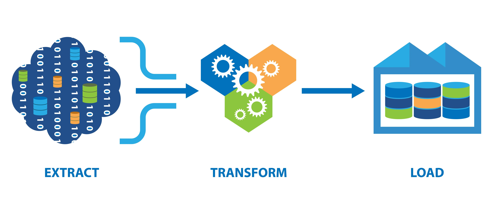

Automating web scraping done in BooksScraping website and scraped the data in all pages(50) in a given website. and saved in a CSV file.
This holds my all Tableau dashboard visualizations.

This ETL process Extract bank and market cap data from the JSON file.Transform the market cap currency using the exchange rate data.Load the transformed data into a separate CSV.

In this ETL process extraction is done on various file types such as json,csv,xml and some data transformation done with the requirements and loaded into a one single DataFrame and a csv file. all the tasks done with logging data and stored it in a txt file.

This project is about moving file formats(.jpg,.csv,.txt) automatically in their destination file location without drag and drop files into folders.

Automating web Scraping done in Amazon web site and updated data into a DataFrame and saved in CSV file. And a function written to a specific user to send automatic emails.